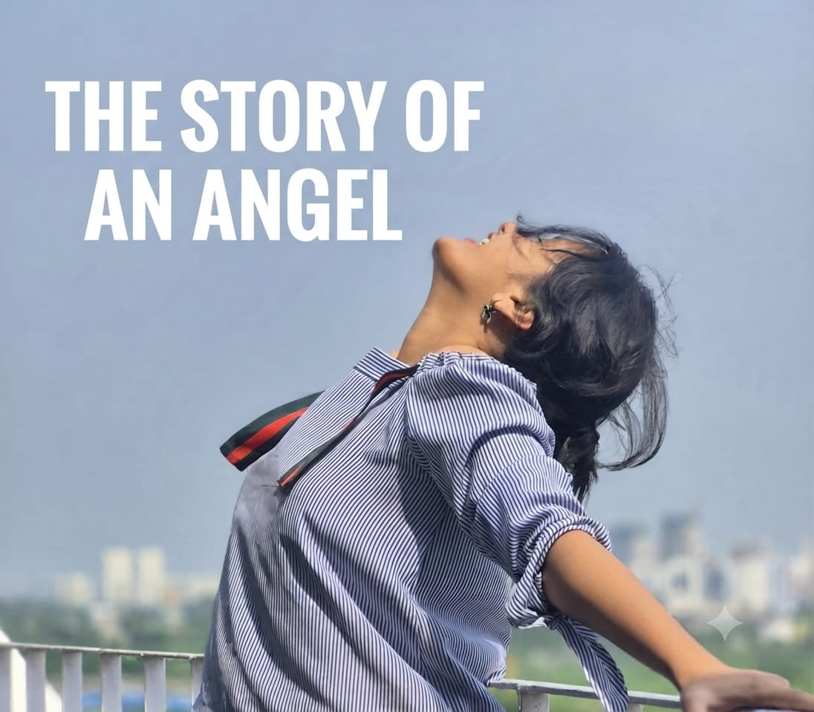
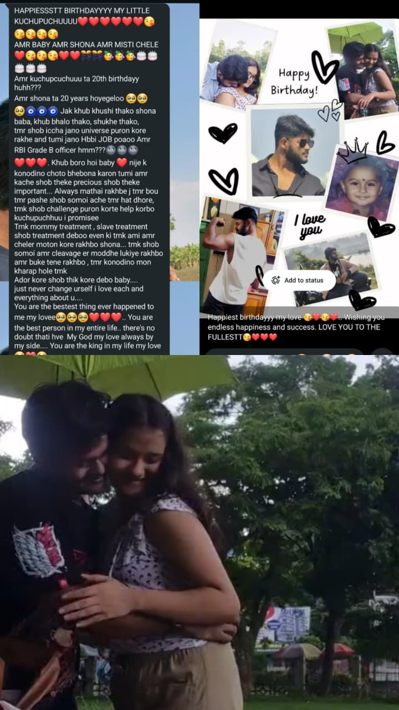

THE VERY FIRST TIME I CONFESSED MY LOVE FOR YOU.

It wasn't perfect, and I didn't get the answer I wished for that day. But sometimes the most beautiful love stories begin in the most unexpected ways.
OUR SINGING PERFORMANCE.

Standing beside you on stage made the performance unforgettable. It wasn't just about the song we sang, it was about teh smiles, nervous excitement, and the memories we created together. Looking back, I realize it wasn't the performance that made the day special, it was sharing that moment with you.
THE SECOND CONFESSION... FROM BEHIND A SCREEN.

I didn't get the answer I was hoping for this time either. I convinced myself that I'd never confess again and would be happy just being your friend. Little did I know, life had something far more beautiful waiting for us.
THE DAY YOUR HEART STARTED CHOOSING ME.

We were sitting together in our classroom, talking endlessly as if the world around us had disappeared. I couldn't take my eyes off you, completely lost in your beautiful smile and the warmth of that moment. Without realizing it, I was experiencing the quiet magic of falling in love. Looking back, I think that day was when our hearts truly began finding their way to each other.
THE GRAND BIRTHDAY CELEBRATION. THE DAY WE GOT LOST IN EACH OTHER.

My birthday became even more special because you were there to celebrate it with me. Surrounded by friends and family at Saffron Restaurant, we spent the day talking, laughing, blushing, and simply enjoying each other's company. In the middle of all the celebrations, it felt like the world faded away, leaving just the two of us lost in the moment.
THE FIRST "I LOVE YOU". THE MAGICAL DAY OF MY LIFE.

What was supposed to be just another Physics tuition at Polu's class quietly became the place where our love story truly began. As we sat together, I opened my heart to you, telling you how deeply I loved you, how far I was willing to go for us, and how much you meant to me. Every time I looked at you, I could see you blushing, and your shy smile made my heart race even faster. Then, in a moment I'll never forget, you looked at me and said, "Tui amar mukh theke etai shunte chaas toh?... I LOVE YOU." For a few seconds, time stood still. I was completely speechless, my heart racing faster than ever, with butterflies filling every part of me. No words can truly capture what I felt in that moment. Even today, when I look back on it, I can still feel the same happiness. It wasn't just the day I heard those three magical words, it was the day my dream finally became reality, and without a doubt, the most beautiful day of my life.
THE RING CEREMONY.

This was the day I wanted to give our love something we could hold onto forever. With a silver ring adorned with a beautiful blue stone, I surprised you and asked you to be mine in a way my heart had dreamed of for so long. Seeing the happiness in your eyes made that moment priceless. It wasn't just about exchanging a ring, it was about making a silent promise to cherish, support, and love each other through every chapter of our lives.
PEN DAY IN SCHOOL.

Pen Day marked the beginning of the end of our school journey, a day filled with both smiles and tears. You were the very first person to sign my school shirt, making it even more special. We poured our hearts into the messages we wrote for each other, expressing a love that words could barely contain. While we were sad that our school days were coming to an end, we were also grateful because those final moments gave us memories we'd cherish forever. That shirt became more than just a farewell keepsake, it became a piece of our love story.
THE SCHOOL EXCURSION.

Our school excursion to the Birla Planetarium was memorable, but the real adventure was the journey itself. The bus ride was filled with endless laughter, singing at the top of our lungs, dancing, playful moments, and countless little memories that still make me smile. Every moment spent with you felt effortless and joyful, turning an ordinary school trip into one of the happiest days of my life. Looking back, it wasn't the destination that made the day unforgettable, it was the journey we shared together.
THE SCHOOL FAREWELL PARTY.

Our farewell was more than just a goodbye to school, it was a celebration of the beautiful memories we had created together. Dressed in our best, you in your elegant saree and all of us in our suits, the day felt truly special. We spent hours taking pictures, laughing, and making every moment count, knowing these memories would stay with us forever. Even though it marked the end of one chapter, it also reminded me how lucky I was to have you by my side through it all.
THE LAST DAY OF SCHOOL.

Our Chemistry exam marked more than just the end of an academic year, it marked the end of our school life together. As we walked through the corridors one last time, I was overwhelmed by emotions I had never felt before. There was happiness for everything we had experienced, sadness that it was all coming to an end, and fear of stepping into a future that would never be the same. Every corner of the school held a memory: our endless conversations in the classroom, the laughter echoing through the corridors, the countless moments on the balcony, and those magical moments we shared on the rooftop. That day, I realized we were leaving a place behind, but never the memories it had given us. School ended that day, but our story was only beginning.
OUR 1ST ANNIVERSARY CELEBRATION IN VAIDIK VILLA.

Our very first anniversary will always hold a special place in my heart. We celebrated it at Vaidik Villa Café in Ranaghat, and every moment of that day felt magical. Looking at you, I couldn't believe that a whole year had passed since we began this beautiful journey together. We laughed, clicked countless pictures, shared delicious food, and celebrated not just an anniversary, but every memory, challenge, and beautiful moment that had brought us this far. No matter how grand our future anniversaries may be, nothing can ever replace the magic of the first one. It was the day we looked back at our journey with gratitude and looked ahead with hope, dreaming of spending many more anniversaries together.
A NEW CHAPTER BEGINS.

Starting college marked the beginning of a completely new chapter in our lives. For the first time, our paths took us in different directions. You chose Animation, Graphic Designing, and Multimedia, while I stepped into the world of CSE with Data Science. We were both nervous, excited, and unsure of what the future would bring. Even though we were no longer in the same school or seeing each other every day, our love never changed. Distance became a challenge, but it also taught us that no matter where life takes us, we'll always find our way back to each other. Different campuses, different dreams, but one heart that continued to beat for us.
OUR FIRST MOVIE DATE.

Our first movie date was nothing short of an adventure. For the first time, we bunked college just to spend an entire day together, making it even more exciting and unforgettable. We watched a movie, enjoyed delicious food at the famous Dada Boudi Restaurant in Barrackpore, and laughed our hearts out, creating memories we'll always cherish. But as the day came to an end, everything changed when my phone was stolen. I felt completely hopeless and devastated, thinking the perfect day had been ruined. Yet, when I look back now, I don't remember the phone as much as I remember being with you. Even with an unfortunate ending, that day remains one of the most memorable chapters of our journey.
KOLKATA PANDAL HOPPING.

Our first Durga Puja together in Kolkata was a day I'll always cherish. Although we went with my college friends, I secretly wished we could have spent the entire day with just the two of us. Still, whenever we drifted away from the group, those moments became the most special. Walking through the beautifully decorated pandals, laughing together, and creating memories in the festive lights made the day unforgettable. My favorite part, though, was capturing countless photos of the most beautiful girl on this planet, you. Every picture I clicked wasn't just a photograph; it was a memory I wanted to hold onto forever.
A PEACEFUL DAY AT MUKUNDANAGAR GHAT.

I'd been to Mukundanagar Ghat many times before, but visiting it with you made it feel like an entirely different place. There was something special about simply being together, laughing, playing around like little kids, and forgetting the rest of the world for a while. Those carefree moments brought out my inner child and filled my heart with a kind of peace I had never experienced before. We shared sweet kisses, enjoyed meal together, and spent the day making memories that I'll treasure forever. It wasn't the place that made the day unforgettable, it was you who turned an ordinary destination into one of my favorite memories.
YOUR BIRTHDAY AT SIDDESHWARI MANDIR.
.jpeg)
Celebrating your birthday at Siddeshwari Mandir made the day feel peaceful, meaningful, and unforgettable. We began the morning by seeking God's blessings together, and standing beside you in that sacred place filled my heart with a quiet sense of happiness. For a moment, I couldn't help but imagine what our future might look like, building a life together and returning to the temple hand in hand for many more special occasions. After offering our prayers, we celebrated your birthday with smiles, laughter, and gratitude. It wasn't just your birthday, it became another beautiful memory that brought us even closer.
ZOO DATE.

Visiting the Alipore Zoo with you had been one of my wishes to get fulfilled for a long time, and thanks to you, it finally came true. From the moment we entered, every step felt exciting as we explored the zoo together, admired the amazing animals, and captured every beautiful moment on camera through our little vlog. We laughed, talked endlessly, and simply enjoyed each other's company, making the day even more special than I had imagined. Thank you for turning one of my long-awaited wishes into one of my happiest memories. No matter how many places we visit in the future, this zoo date will always have a special place in my heart.
OUR BEST SARASWATI PUJA TOGETHER.

The Saraswati Puja of 2nd and 3rd February 2025 will always remain one of my favorite memories. Seeing you dressed so beautifully in those sarees made everything around me fade into the background. No matter how hard I tried, I simply couldn't stop admiring you. Those two days were filled with laughter, prayers, countless beautiful moments, and the peaceful feeling of celebrating together. With your presence and Maa Saraswati's blessings, those days became more than just a festival, they became two of the happiest and most cherished days of my life.
A RAINY DAY IN MAYAPUR ISKCON.

Our trip to Mayapur was an adventure I'll never forget. The rain only made the journey more beautiful, adding a little magic to every moment we spent together. We explored the peaceful surroundings, laughed through the unexpected weather, and created memories that still make me smile. It wasn't just Mayapur that made the day special, it was sharing every step of that journey with you. Even today, we dream of visiting that beautiful place again, not just to see Mayapur once more, but to relive the happiness we found there together.
THE MORNING WALKS OF JULY.

The mornings from 1st to 4th July will always hold a special place in my heart. Going on morning walks with you was a dream I'd carried for a long time, and finally getting to live those moments felt unreal. We walked hand in hand, ran, raced each other, laughed like little kids, and even challenged ourselves to do pull-ups behind our school field. Sometimes the rain joined us, making those mornings feel even more magical and alive. Every sunrise became brighter simply because you were there beside me. Although those beautiful days came to an unexpected end on 4th July, I choose to remember them for the happiness they gave us, the laughter we shared, and the memories that will stay with me forever.
MY BIRTHDAY... MADE PERFECT BY YOU.

This birthday became one of the most unforgettable days of my life because of you. I was completely surprised when you arrived carrying a birthday cake just for me. In that moment, I realized how truly blessed I am to have someone as thoughtful and loving as you in my life. You took me to the OG place of Kalyani, Central Park, where we celebrated my birthday under an umbrella in the middle of a bright sunny day, laughing, cutting the cake, and creating memories I'll cherish forever. As if that wasn't enough, you gifted me a big tub of whey protein, a gift that perfectly reflected how well you know me and how much you care about the little things that make me happy. To make the day even more special, we ended our celebration with a movie date and watched Saiyaara together. Every surprise, every smile, every effort you made that day reminded me just how deeply loved I am. Thank you, my love, for making this birthday one I'll carry in my heart forever.
OUR 2ND ANNIVERSARY CELEBRATION IN BARRACKPORE'S DADA BOUDI RESTAURANT.

Our second anniversary was celebrated on a peaceful, rainy day, making the occasion feel even more romantic. We visited Barrackpore's famous Dada Boudi Restaurant, where every moment, from sharing delicious food to simply sitting and talking together, became a beautiful memory. The cozy atmosphere, the gentle rain outside, and your company made the day feel truly special. As I looked back on the two incredible years we'd spent together, my heart was filled with gratitude for every laugh, every challenge, and every memory we had created along the way. It wasn't just another anniversary, it was another milestone in our journey, reminding me that my favorite place will always be wherever you are. And I know we'll return here again, hopefully on our third anniversary, to create another chapter in our beautiful story.
PANDAL HOPPING IN KALYANI.

Our Kalyani Pandal Hopping was nothing short of an unforgettable adventure. The moment I saw you in that gorgeous blue saree paired with a sleeveless blouse, the entire world seemed to fade away. I simply couldn't stop admiring you or capturing your beautiful smile through my camera. Out of all the dazzling lights and magnificent pandals we visited that day, you were by far the most breathtaking sight. We wandered through countless beautifully decorated pandals, got lost for a while, laughed as we searched for the right way, and turned every little unexpected moment into a memory worth cherishing. After an exciting day of exploring, we ended it with a meal at a restaurant before heading home with our hearts full of happiness and our cameras filled with memories. It wasn't just another Durga Puja outing, it was another beautiful chapter of our story that I'll treasure forever.
YOUR BIRTHDAY SURPRISE.

This birthday will always be one of my favorite memories because I finally got to give you the surprise you truly deserved. You always believed that you didn't have friends to celebrate your birthday with, and hearing that always made me want to prove you wrong. So, I planned everything in secret. I told you we were simply going for a bike ride to our OG place, the place where so many beautiful memories of our story began. But when we arrived, you were greeted by two of your closest friends, a birthday cake, and a celebration that had been waiting just for you. The look of surprise and happiness on your face was something I'll never forget. Seeing you smile like that made every bit of planning worthwhile. I'm incredibly grateful to your friends for joining me and helping make your special day even more memorable. More than the cake or the celebration, what mattered most to me was making you realize that you're deeply loved and that there are people who genuinely care about you. Watching you enjoy every moment was the greatest birthday gift I could have received in return.
MEMORIES ON THE CLASSIC 350.

Our Royal Enfield Classic 350 has been more than just a motorcycle, it has been a silent companion on so many of our adventures. Together, we've ridden to beautiful places, chased sunsets, discovered new roads, and created countless unforgettable memories along the way. Every ride carried laughter, conversations, and moments that brought us even closer. This day was dedicated to celebrating those beautiful journeys as we stopped at a scenic spot and captured some of our favorite pictures with the motorcycle that has witnessed so much of our story.
IN THE WORLD OF FLOWERS. CHAPRA.

Knowing how much my beloved wife loves flowers, a trip to the World of Flowers in Chapra felt like the perfect little escape for us. Surrounded by endless blooms and vibrant colors, every corner looked like a painting brought to life. We wandered through the beautiful flower fields, sat beneath a tree laughing about the silliest things, admired the peaceful surroundings, and simply enjoyed being together. Before leaving, we bought some flowers and captured photos to preserve the beauty of the day. Looking back, it wasn't just a visit to a flower garden, it was another reminder that every place becomes more beautiful when I'm sharing it with you.
VALENTINE'S DAY CELEBRATION.

Our Valentine's Day was nothing short of magical. As the evening began, I picked you up on my bike, and together we rode to Flavors of Ranaghat, enjoying the cool breeze and the peaceful weather along the way. We shared a wonderful meal, laughed about the little things, and cherished every second of being together. After that, the night became even more special as we captured countless photos and videos, filled with hugs, kisses, dances, and genuine smiles that reflected our happiness. It was one of those evenings where time seemed to slow down, allowing us to simply enjoy each other's company. I'll always treasure this Valentine's Day, and I can't wait for the next one, because I know it will be a truly unique chapter and a 'once in a lifetime' valentine's day in our journey and a celebration we'll remember for the rest of our lives.
MOTHER'S WAX MUSEUM.

Our trip to Mother's Wax Museum was truly one of the most adventurous days we've ever had together. The day began with a small misunderstanding between us, and I still remember handing you flowers because I couldn't bear seeing you upset. Thankfully, your smile returned, and with it, the rest of the day became beautiful. We explored the wax museum, admired the incredible figures, clicked countless photos, and laughed our hearts out. Of course, no adventure is complete without a little chaos. We got confused about the buses and ended up wandering all over Kolkata, turning what could have been a frustrating situation into one of the funniest memories we now share. By the time we reached home, we were completely exhausted, but our hearts were full. Looking back, it wasn't a perfect day, but it was a perfectly unforgettable one, proving once again that even the unexpected moments become beautiful when I'm with you.
MY BEST BIRTHDAY CELEBRATION EVER.


If someone ever asks me what the happiest birthday of my life looked like, I'll simply tell them to look at 23rd July 2026. It wasn't just another birthday, it was the day you made me feel like the luckiest and happiest person in the entire world. I'm just an ordinary guy, yet the way you celebrated my 20th birthday made me feel truly extraordinary. You told me we were simply going to our OG place, Central Park in Kalyani, to celebrate my birthday before heading to Sangam Cinemas to watch The Odyssey. I thought that was the entire plan... but little did I know that you had spent so much time, love, and effort preparing the biggest surprise of my life. When you handed me the gifts one by one, I was completely speechless. I never imagined that someone could put so much thought and love into making my day special. You didn't just bring me a gift... you brought twenty-one beautiful reasons to smile. From a heartfelt handwritten love letter to gym wear, coffee, chocolates, a Spider-Man showpiece, Attack on Titan manga, anime posters and stickers, Death Note, pre-workout, a bouquet of roses, sunscreen, body spray, handkerchiefs, biscuits, and finally... a list of 100 reasons why you love me. Every single gift reflected how deeply you know me and how carefully you had planned everything. They weren't just presents, they were pieces of your love wrapped in different forms. We sat together beneath a tree in Central Park, cutting my birthday cake, laughing together, opening each surprise with childlike excitement, and creating memories that I'll carry for the rest of my life. And then, as if the day wasn't already perfect enough, the rain began to fall. Instead of ruining the celebration, it made everything even more magical. Sitting there with you, listening to the rain while celebrating my birthday, felt like a scene straight out of a movie that I never wanted to end. After spending such a beautiful afternoon together, we went to Sangam Cinemas to watch The Odyssey, ending a day that had already exceeded every dream I could have imagined. Looking back, I don't just remember the gifts, the cake, or the movie. I remember how you made me feel. You made me feel valued, deeply loved, appreciated, and incredibly special. It was the very first birthday where I felt so celebrated, and I honestly never thought something this beautiful would ever happen to me. Thank you, my love, for every hour you spent planning this surprise, for every thoughtful gift, for every hug, every smile, every laugh, and every little effort that made this day unforgettable. Thank you for walking into my life and filling it with so much happiness. No matter how many birthdays I celebrate in the future, this one will always be the benchmark against which every birthday is measured. You didn't just give me presents... you gave me a memory that I'll cherish for the rest of my life. And that final gift, "100 Reasons Why I Love You," reminded me of something I'll never forget: the greatest gift I've ever received isn't something that can be wrapped in paper. It's you.
THE OG PLACE OF KALYANI. CENTRAL PARK.

Central Park in Kalyani will always be more than just a place to us, it is where some of our most precious memories were created. From 2024 to 2026, we spent countless hours there laughing, talking, playing around, sharing quiet moments, and simply enjoying each other's company. It became our little escape from the rest of the world, a place where time seemed to slow down whenever we were together. Some of our happiest celebrations, deepest conversations, and most beautiful memories were made beneath its trees and open skies. No matter how many new places we visit in the future, Central Park will always remain our OG place, the place that witnessed our love grow stronger with every visit. It isn't just a location on a map; it's a home for countless memories that will forever live in our hearts.
OUR ENDLESS MOVIE DATES.

From 2024 to 2026, our movie dates became our favorite way to escape into different worlds together. Whether it was an action-packed blockbuster, a heartfelt romance, a thrilling horror film, an anime movie, or a light-hearted comedy, every movie gave us another reason to spend time together. We watched countless films over these years, including Stree 2, Saiyaara, Shinchan movies, The Odyssey, Dhurandhar, Dhurandhar: The Revenge, Pushpa 2, Project Hail Mary, Michael, Lee Cronin's The Mummy, Obsession, Bohurupi, Bahubali: The Epic, several animated films, and many more. But the movies themselves were never the best part. It was the excitement of choosing our seats, sharing snacks, laughing together, discussing the story afterward, and walking out of the theatre with another beautiful memory. Every ticket we bought became more than just an entry to a film, it became another chapter in our love story. No matter how many movies we watch in the future, I'll always look forward to the one thing that never changes, having you beside me.
THE SANGAM MULTIPLEX.

From 2024 to 2026, if there was one place that became synonymous with our movie dates, it was Sangam Multiplex, Kalyani. More than just a cinema hall, it became a place where countless memories of our relationship were created. We returned there again and again, not just for the movies, but for the joy of spending time together. Those auditoriums witnessed our laughter, our excitement before every film, our conversations after the credits rolled, and the little moments that made every date so special. Every seat we occupied, every ticket we booked, and every walk through its corridors became a part of our journey. To most people, it's simply a movie theatre. But to us, it's a place filled with love, happiness, and memories that will always have a special place in our hearts. No matter how many cinemas we visit in the future, Sangam Multiplex will always be our movie hall.
OUR SHOPPING MALL ADVENTURES.

From 2023 to 2026, our shopping dates became some of the simplest yet happiest moments of our journey together. We explored countless malls and stores, from the elegance of Quest Mall to the lively atmosphere of City Centre 2, along with Zudio, Pantaloons, Bazaar Kolkata, MBazaar, Express Bazaar, More Supermarket, Smart Bazaar, and many more. Sometimes we went to shop, sometimes just to wander around, try new food, window shop, or spend quality time together. Every visit brought new conversations, shared laughter, and little memories that made even the most ordinary days feel extraordinary. Looking back, I realize it was never about the malls or the shopping. It was about the happiness of having you beside me, turning every outing into another unforgettable chapter of our story.
OUR CAFE DATES.

From 2023 to 2026, our café dates became one of the sweetest parts of our journey together. We explored many cafés, both inside and outside Ranaghat, including Kustard Kones, Momo Street, Cha-Wala, Cha-Khor, and many more. But if there was one place that truly became our place, it was Kustard Kones. Time and time again, we found ourselves returning there, ordering our all-time favorite, Choco Mutella, and spending hours talking about everything and nothing. Some of our deepest conversations, loudest laughter, and most peaceful moments were shared over a table with two drinks and a dessert. Looking back, I realize it was never just about the food or the café. It was about the comfort of sitting across from you, watching time slow down as we created memories that we'll carry with us forever.
OUR RESTAURANT DATES.

From 2023 to 2026, every restaurant we visited became another chapter in our love story. Together, we explored many wonderful places, including Saffron, Bangal Ghoti, Topshe, Vaidik Villa, and Flavors of Ranaghat in Ranaghat, The Lay Lawn in Kalyani, Dada Boudi Restaurant in Barrackpore, Awadh in Naihati, and even the unique train-themed restaurant near Sealdah Station. Every place had its own charm, its own flavors, and its own memories. We celebrated birthdays, anniversaries, Valentine's Day, and countless ordinary days that became extraordinary simply because we were together. Some meals were filled with endless laughter, some with deep conversations, and some with peaceful silence where simply being in each other's company was enough. Looking back, I realize that it was never just about the food. It was about the person sitting across the table, turning every meal into a celebration and every restaurant into a place worth remembering.
OUR DURGA PUJAS TOGETHER.

From 2023 to 2025, every Durga Puja we celebrated together became a festival of love, laughter, and unforgettable memories. Walking through beautifully decorated pandals, admiring the dazzling lights, clicking countless pictures, sharing delicious food, and simply spending those festive days together made every Puja unique in its own way. Among them all, Durga Puja 2024 will always hold a special place in my heart. From exploring the grand pandals of Kolkata to creating beautiful memories that we'll cherish forever, it was undoubtedly our best Puja together so far. As the years pass, I know we'll celebrate many more Durga Pujas side by side, creating new memories while holding onto the old ones that made our journey so beautiful.
MAA DURGA'S DIVINE BLESSINGS.

Throughout our journey from 2023 to 2025, Maa Durga has always been a symbol of strength, hope, and blessings in our lives. With folded hands and grateful hearts, we pray that she continues to guide us through every chapter of our journey. May she bless us with good health, happiness, wisdom, and prosperity. May our love continue to grow stronger with every passing day, helping us overcome every challenge that comes our way. Above all, we pray that her blessings always keep us together, filling our lives with peace, trust, and endless love for one another.
OUR KALI PUJAS TOGETHER.

From 2023 to 2025, every Kali Puja and Diwali we celebrated together became another beautiful chapter in our journey. The festive lights, colorful decorations, and joyful atmosphere made every celebration feel magical. We visited the famous Friend's Club pandal, admired the beautiful idols, and spent hours exploring the festivities together. Some of the most exciting moments were riding the giant wheel, screaming with laughter on the break dance ride, wandering through the crowded pandals, and capturing countless photos to remember those nights forever. Looking back, it wasn't just the festival that made those evenings so special, it was the happiness of celebrating them with you. I hope we continue creating many more Kali Puja memories together for years to come.
MERRY CHRISTMAS!

From 2022 to 2025, every Christmas became a beautiful chapter in our story. In 2022, we celebrated Christmas in our school as nothing more than friends, never realizing what the future had in store for us. By 2023, we returned to the school to celebrate again, but this time everything had changed. We were no longer just friends, we had fallen in love, making every smile and every moment even more meaningful. In 2024, we visited the church together with our friends, embracing the peaceful spirit of Christmas and creating memories that still warm my heart. Then came 2025, my favorite Christmas of them all. We celebrated together with your friends, laughed endlessly, explored the festive streets, and made unforgettable memories. As the night came to an end, you and I walked home together past a quiet graveyard, feeling a strange mix of fear, excitement, and laughter. Looking back, that little adventure became one of the most memorable parts of the night. Every Christmas has given us something special, and I can't wait to celebrate countless more with you, making each one even more magical than the last.
THE RATH YATRA'S.

The Rath Yatra fair at Swasthanatti Maidan will always hold a place in our hearts unlike any other festival. Every year has given us a new memory, a new story, and another reason to smile whenever we look back. It's amazing to think that one festival quietly witnessed the entire journey of our relationship, from strangers, to friends, to best friends, and finally to two people deeply in love. In 2022, everything began. We visited the fair with our friends, and it was one of the very first times we truly talked to each other as friends. Neither of us could have imagined that a simple conversation at a fair would one day become the beginning of our forever. Looking back now, it feels like destiny had already started writing our story. By 2023, we had become best friends. We once again wandered through the fair with our friends, laughing, enjoying the rides, and making beautiful memories together. I still remember looking at you and saying, "Tui toh shob actress der keo chapiye gechis." Even today, whenever that compliment comes up, I can still see the same adorable blush on your face, and that memory never fails to make me smile. 2024 was the year that made Rath Yatra even more special. Before heading to the fair, I came to your house, where we shared some playful moments that still make us laugh whenever we remember them. I even helped you get ready before we left, and seeing you in that beautiful yellow churidar completely took my breath away. You looked absolutely stunning. We then met up with our friends at the fair, explored every corner together, enjoyed the festive atmosphere, and created another chapter that we'll never forget. In 2025, we visited the fair again, this time with your friends, and even met some of my own friends there. It was another wonderful evening filled with laughter, conversations, delicious food, and the familiar joy that Rath Yatra always seems to bring into our lives. Then came 2026, perhaps the most special Rath Yatra of them all. This time, it was just the two of us. No large group, no distractions, just you and me creating memories together. We loved it so much that one day wasn't enough, so we came back the next day and experienced it all over again. Those two evenings felt peaceful, romantic, and incredibly special because we got to enjoy every moment entirely on our own. Across all these years, one tradition remained almost unchanged: the Giant Wheel. Every year after 2022, riding the Giant Wheel became our little ritual. Sitting high above the fair with you beside me, watching the colorful lights spread across the night sky, became one of my favorite moments of every Rath Yatra. The rides, the laughter, the food, the lights, the music, and the memories all made the festival unforgettable, but the real reason Rath Yatra is so special is because every year it gave us another beautiful chapter in our love story. Whenever I think of Rath Yatra, I don't just remember a fair... I remember us.
FINAL CHAPTER. TO BE CONTINUED... ❤️

And here we are. Every memory above is a chapter we've already lived, laughed through, cried through, and cherished together. Some chapters filled our hearts with endless joy, some tested us in ways we never expected, and some quietly taught us how deeply we could love one another. Looking back, I wouldn't change a single page of our story, because every moment, every challenge, every smile, and every tear led me to you. But this isn't the end of our story. It's only the end of the chapters we've written so far. There are still countless sunrises waiting for us, new cities to explore, festivals to celebrate, movies to watch, cafés to discover, dreams to chase, and anniversaries to cherish. There are still countless photographs yet to be taken, countless conversations yet to be had, and countless memories waiting to become another page in our story. One day, we'll return to this webpage, read every chapter together, smile at how young we were, laugh at our little adventures, and realize that the dreams we once wrote about have quietly become our reality. To my beloved wife, Thank you for walking into my life and turning ordinary days into extraordinary memories. Thank you for every smile, every hug, every surprise, every sacrifice, and every moment that made me feel loved beyond words. You are, and always will be, the greatest blessing of my life. Here's to forever. Here's to us. Here's to every chapter we've written... and every chapter that's still waiting to be lived. To be continued... ❤️